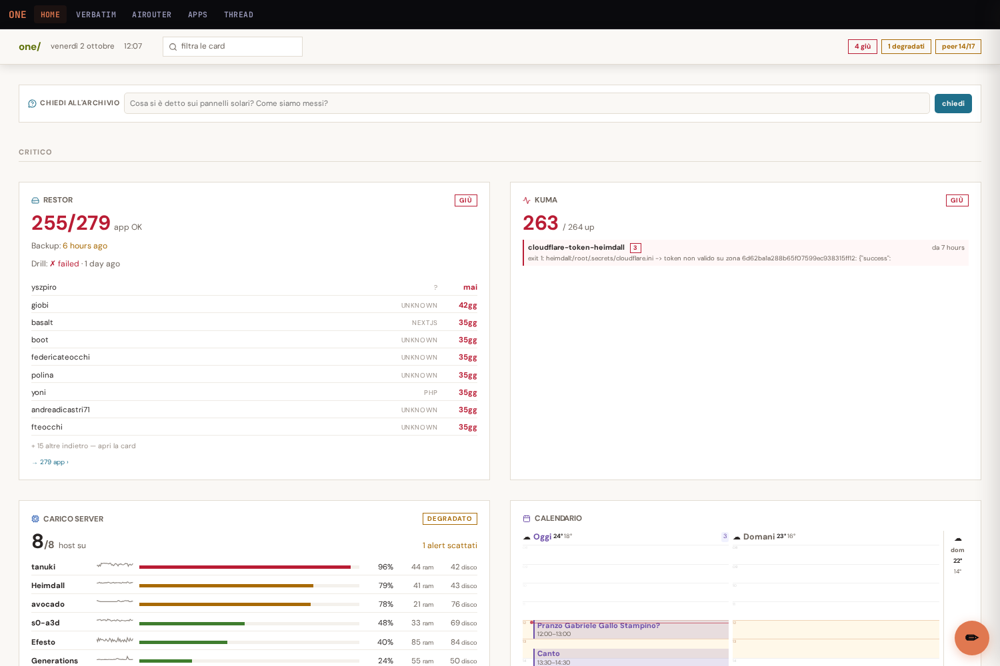
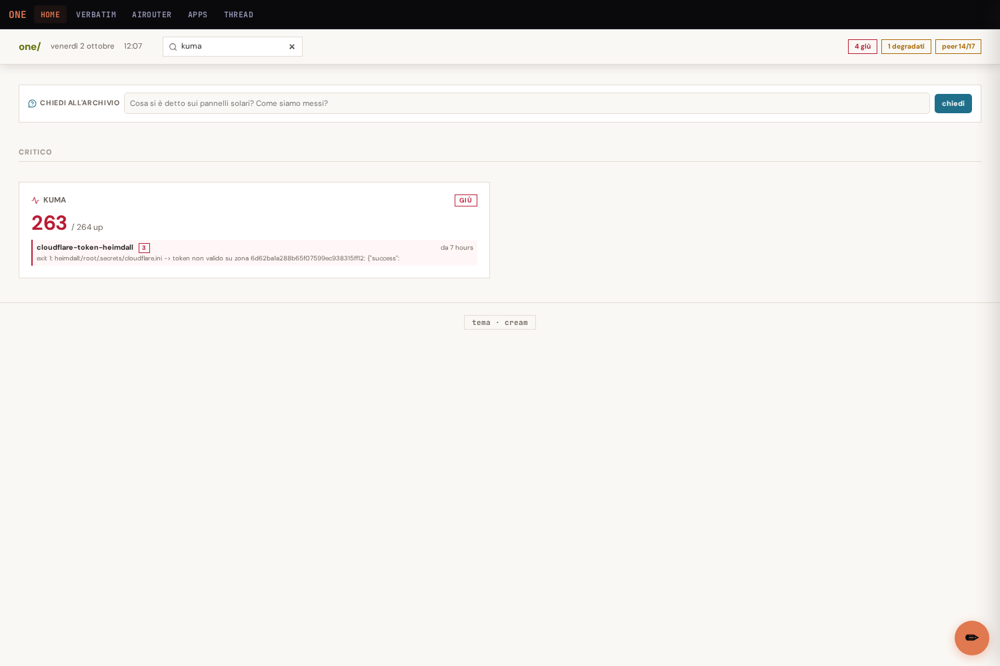
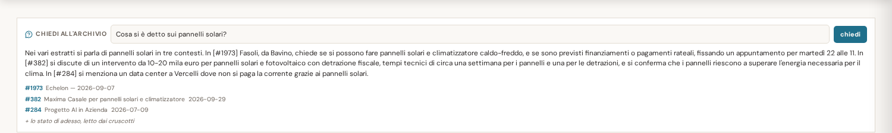
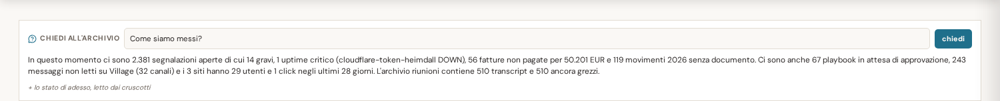
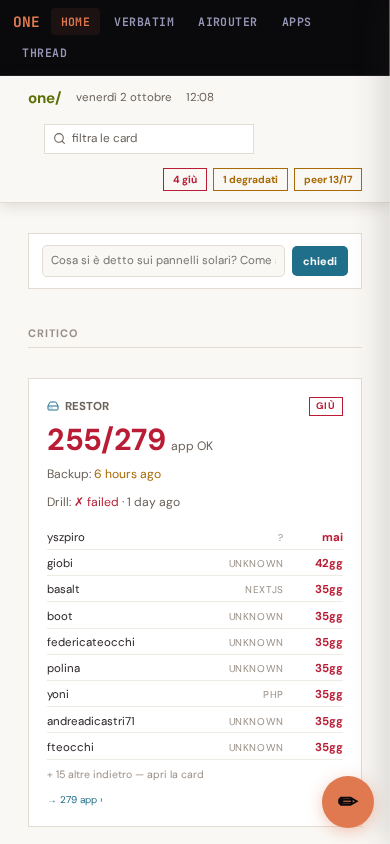
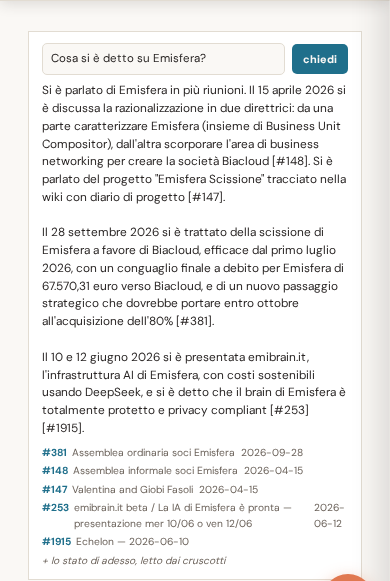

one — la casella di domanda sale in cima, e impara come siamo messi
2 ottobre 20262 collaudi completiVerifica dopo la modificaone.giobi.com
95/100
Funziona, e si vede subito
La casella per fare domande all'archivio ora sta in alto, appena sotto la barra del titolo, invece che in fondo alla pagina. E alle domande sa rispondere anche con lo stato del momento: quante fatture non pagate ci sono, quante segnalazioni aperte, quanti messaggi non letti. Le due cose restano separate: quello che è stato detto in riunione e quello che succede adesso non vengono mescolati. I cinque punti mancanti sono per un errore già presente prima di questo lavoro, su una scheda diversa della pagina.
Cronologia
10:40Si parte dai due difetti segnalati: la casella è in fondo e non sa niente delle altre schede.
11:10Scritti prima i controlli automatici, poi il codice che li fa passare.
11:45Casella spostata in cima, fuori dalla griglia delle schede.
12:05Primo collaudo con browser vero: schermo grande e telefono.
12:20Corretto un dettaglio emerso dal collaudo e rifatto il giro da capo.
circa 2 ore
R1La casella adesso è la prima cosa che si vede
Prima stava in fondo, in mezzo a una quarantina di schede: per usarla bisognava scorrere tutta la pagina. Adesso sta subito sotto la barra in alto, accanto al campo "filtra le card", larga quanto la pagina. Aprendo one la si ha già davanti.

Schermo da 1500 pixel: barra in alto, casella, poi le schede.
R2Il filtro continua a funzionare, e non porta via la casella
Il campo "filtra le card" nasconde le schede che non contengono la parola cercata. La casella è stata messa fuori da quell'elenco apposta: scrivendo "kuma" resta una sola scheda, ma la casella rimane dov'è. Era il momento peggiore per farla sparire, perché è proprio guardando una scheda che viene voglia di fare una domanda.

Filtro "kuma": una scheda su quaranta, casella ancora al suo posto.
R3Una domanda vera sull'archivio, con le riunioni da cui viene la risposta
Chiesto "Cosa si è detto sui pannelli solari?". La risposta è arrivata in 20 secondi e sotto ci sono le tre riunioni su cui si appoggia, ognuna cliccabile. Le riunioni elencate sono soltanto quelle che la risposta cita davvero: prima ne comparivano cinque, comprese quelle che non avevano contribuito a niente.

Risposta in 20 secondi, tre riunioni citate, e la riga che dice che c'era anche lo stato di adesso.
Questa domanda prima non poteva funzionare: nessuno la pronuncia in riunione, quindi l'archivio non aveva niente da dire e rispondeva "non trovo niente". Adesso insieme alla domanda viaggia un riassunto di sette righe preso dalle schede della dashboard, e la risposta è fatta di numeri veri. Sotto non compare nessuna riunione, perché nessuna riunione ha contribuito: c'è solo la riga che dice da dove vengono i numeri.
In questo momento ci sono 2.381 segnalazioni aperte di cui 14 gravi, 1 uptime critico (cloudflare-token-heimdall fuori servizio), 56 fatture non pagate per 50.201 EUR e 119 movimenti 2026 senza documento. Ci sono anche 67 playbook in attesa di approvazione, 243 messaggi non letti su Village (32 canali) e i 3 siti hanno 29 utenti e 1 click negli ultimi 28 giorni. L'archivio riunioni contiene 510 transcript e 510 ancora grezzi.

Nessuna riunione sotto la risposta: i numeri vengono dalle schede, e il report lo dice.
Provata su uno schermo da 390 pixel, cioè un telefono normale. La casella è sempre subito sotto la barra, l'etichetta a sinistra sparisce per lasciare spazio al campo e al pulsante, e la pagina non scorre di lato. La risposta si legge per intero senza zoom.

Telefono: barra, casella, poi le schede.

Una domanda su Emisfera, risposta e riunioni citate, sempre su telefono.
Durante il collaudo la pagina registra un errore: la scheda "airouter" non riesce a caricarsi e risponde con un errore del server. Non dipende da questo lavoro — è un difetto noto di quella scheda, che esaurisce la memoria — e infatti tutte le altre ventuno schede rispondono correttamente. La casella di domanda non la usa e funziona lo stesso. Sta qui perché è l'unica cosa rossa che si vede nei registri del browser, e vale la pena saperlo.
86 test, 1 fallimento preesistente e scollegato (VaultControllerTest::test_vault_ready_seal_redirects, bucket S3)
Verdict
HEALTHY — 95/100 (−5 per il 500 preesistente su /api/widgets/airouter visibile in console)
Posizione della casella
Prima: <div class="card sp2" data-card="verbatim-ask" data-sb-skip> dentro .grid, in fondo
Dopo: <div class="askbar"><div class="askbox" data-card="verbatim-ask" data-sb-skip>
fra .header e .grid
Geometria misurata con Playwright
1500x1000 header 43 → 97 askbox y=127 h=56 .grid y=183
390x844 askbox y=232 (header mandato a capo), scroll orizzontale: no
Due motivi per stare FUORI da .grid, non solo estetici:
1. il filtro della topbar itera grid.querySelectorAll('.card'): da dentro,
la casella spariva appena si filtrava qualcosa
2. il pannello laterale clona la card cliccata, e clonare un form duplica
i suoi id — da quel momento getElementById restituisce la copia e il
campo in pagina smette di funzionare senza errori in console.
Fuori dalla griglia l'elemento non ha classe `card`, quindi il selettore
`.card:not([data-sb-skip])` non lo raggiunge; `data-sb-skip` resta come
seconda difesa ed è asserito in HomeAskBoxTest.
Lo snapshot di sistema
App\Services\SystemSnapshot — 404 caratteri, 7 righe, cache 60s (array in test, database in prod)
uptime: 1 segnalazioni aperte (ultima: cloudflare-token-heimdall DOWN - No heartbeat...)
segnali aperti: 2.381 di cui gravi 14
fatture non pagate: 56 per 50.201 EUR · movimenti 2026 senza documento: 119
playbook in attesa di approvazione: 67
archivio riunioni: 510 transcript, 510 ancora grezzi
village: 243 messaggi non letti su 32 canali
siti (3): 29 utenti e 1 click negli ultimi 28 giorni
DENTRO (db locale o file già su disco)
pulse (pgsql_brain) uptime aperti + segnali aperti/gravi
ledger (pgsql_ledger) fatture non pagate, movimenti senza documento
async_jobs (sqlite locale) playbook in attesa
transcripts (pgsql_brain) dimensione archivio
village-notifiche/dati.json, cache/analytics.json
FUORI
restor, jobs, todo, canary, notifiche, anansi sudo -u giobi python3, timeout 30-90s
n8n, beszel HTTP verso host remoti
calendar, radar BrainService → Google e remoto
tailscale `tailscale status` via reflection
kuma kuma_widget.py in subprocess verso Heimdall
(il dato arriva lo stesso: via pulse, in locale)
airouter remoto, e oggi 500 per memoria esaurita
llm, motori, brains, buckets file locali, quindi economici, ma fuori
per tenere lo snapshot corto
Ogni riga ha il suo try/catch: una fonte che non risponde esce dallo snapshot in
silenzio e la domanda parte lo stesso. Verificato nel test puntando la connessione
pgsql_ledger su una porta morta: la riga "fatture" sparisce, il resto resta.
Le due fonti nel prompt
STATO DEL SISTEMA ADESSO (letto dai cruscotti di one in questo momento,
non detto in riunione — non citarlo con [#id]):
<snapshot>
========
ESTRATTI DALLE RIUNIONI (cose dette, in passato):
[#1973] Echelon — 2026-09-07
...
========
Domanda: ...
Lo stato va PRIMA: è la cornice in cui si legge il resto, e un modello che
riceve prima i frammenti tende a rispondere da quelli anche quando la domanda
era su oggi. Il system prompt dichiara le due fonti una per una e vieta di
citare lo snapshot con [#id].
Conseguenza sul ramo "archivio vuoto": prima, zero passaggi = risposta
preconfezionata senza chiamare il modello. Adesso quel corto circuito scatta
solo se ANCHE lo snapshot è vuoto — altrimenti "come siamo messi" riceveva la
risposta "non trovo niente" mentre la risposta era sulla dashboard.
Le fonti mostrate sotto la risposta sono ora quelle che la risposta CITA
davvero (VerbatimAskController::cited). Con lo stato in gioco e nessuna
citazione, non si mostra niente: cinque titoli di riunione sotto una risposta
presa dai cruscotti si leggono come "lo dicono queste riunioni".
Timeout allineati
nginx fastcgi_read_timeout 180s (alzato in parallelo, non da questa sessione)
PHP VerbatimAskController::TIMEOUT = 150s
JS AbortController + setTimeout 150000 ← aggiunto qui
Prima il client non aveva alcun abort: la fetch restava appesa a discrezione del
browser e il bottone "chiedi" poteva non riabilitarsi mai. Ora scade insieme al
server e mostra un messaggio invece di restare bloccata.
Tempi misurati nel collaudo: 20.0s (archivio, 1500px), 15.0s (stato), 26.5s (390px).
Test
tests/Feature/SystemSnapshotTest.php (nuovo, 7 test)
snapshot compatto: ≤900 caratteri, una riga per fatto, ogni riga ha un numero
fonte irraggiungibile: pgsql_ledger su porta morta → riga assente, snapshot vivo
cache 60s: seconda chiamata, zero query su pgsql_brain (DB::listen)
prompt: stato prima dei passaggi, blocchi etichettati, system prompt che li separa
cited(): solo le riunioni citate, nessuna se ha risposto lo stato
giro completo senza passaggi → il modello viene chiamato comunque
"come siamo messi?" → la risposta contiene un numero preso dallo snapshot
tests/Feature/HomeAskBoxTest.php (nuovo, 4 test)
la casella precede .grid e segue #card-filter
la topbar conserva filtro, chip e lista peer
la casella non è una .card e porta data-sb-skip; il selettore del pannello resta
il client aspetta 150s come il server
tests/Feature/VerbatimAskTest.php (2 asserzioni aggiornate)
la domanda senza riscontro non è più la risposta preconfezionata: si verifica
invece che non inventi un [#id] da citare
Niente RefreshDatabase, niente mock, nessuna riga scritta: ogni test confronta
il conteggio di transcripts prima e dopo. Pint eseguito solo sui file toccati.
Console del browser
[error] Failed to load resource: the server responded with a status of 500 ×2 (1500px)
[error] Failed to load resource: the server responded with a status of 500 ×1 (390px)
Nessun pageerror, nessuna eccezione JS, nessuna richiesta fallita per rete.
Sondati a mano tutti e 22 gli endpoint /api/widgets/*: 200 ovunque tranne
/api/widgets/airouter → 500 (memoria esaurita, difetto noto e fuori scope).